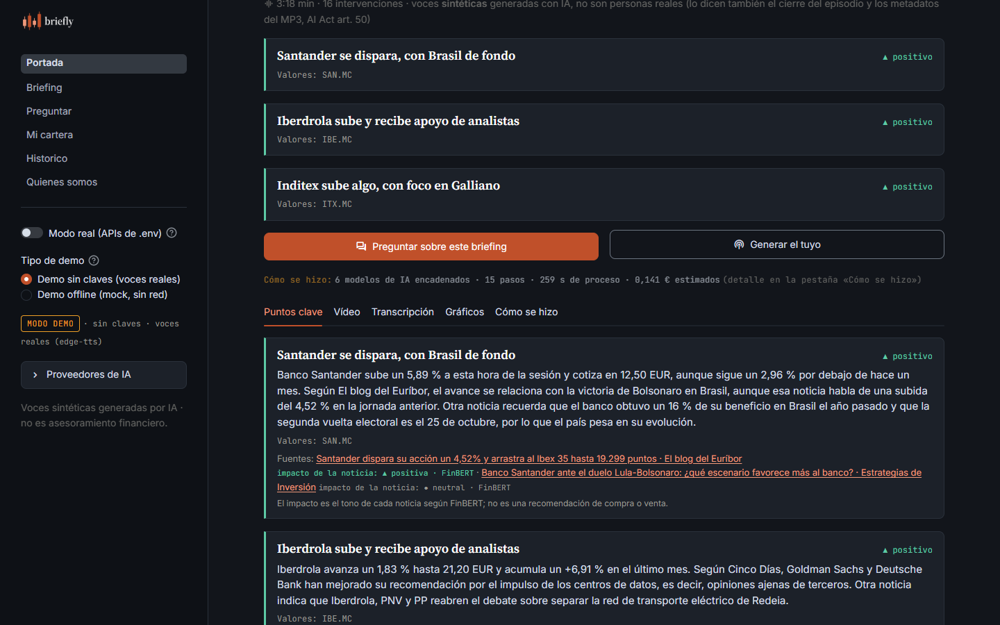
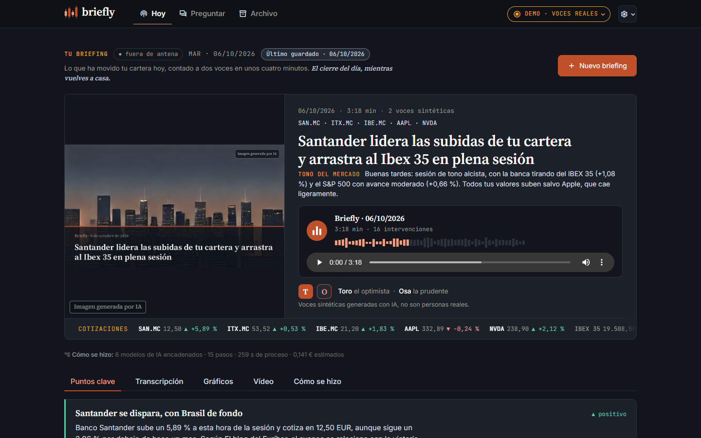
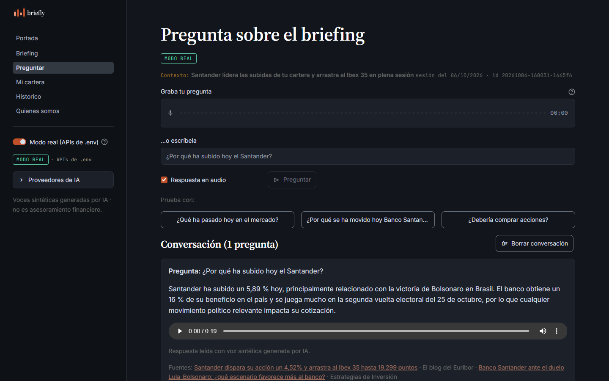
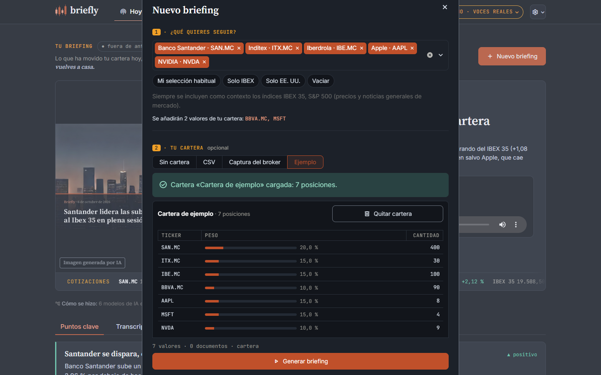
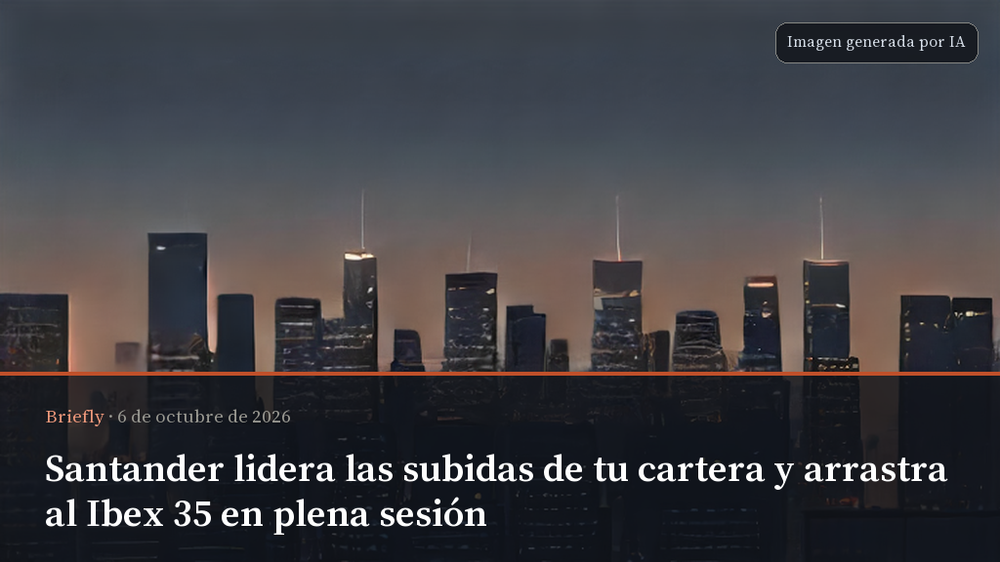
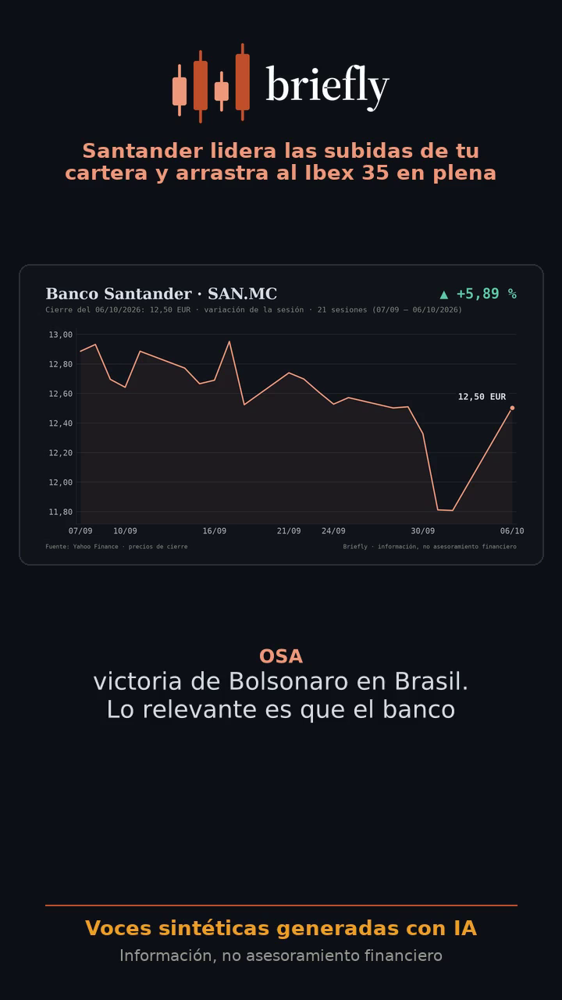

El cierre del día, mientras vuelves a casa
Lo que ha movido tu cartera hoy, contado a dos voces en unos cuatro minutos. Un MVP FinTech que encadena modelos de lenguaje, visión, voz e imagen.
Óscar Romero Quincoces · Daniel García López · Fernando Dapena Tauste

El inversor minorista que gestiona su cartera tiene un problema de tiempo y de formato, no de acceso a la información.
Lo relevante para tus valores, perdido entre cientos de noticias irrelevantes.
Resultados de 40 páginas y velas japonesas exigen tiempo y formación.
Podcasts y newsletters no conocen tu cartera; buena parte, en inglés y con jerga.
Un chat con IA responde, pero no llega solo ni lee tu PDF dentro de un flujo.
Hispanohablante, 25-55 años, cartera propia en un broker online (acciones y ETFs, 5-20 posiciones). Sin tiempo para seguir el mercado a diario.
Lo escucha en el trayecto de vuelta; lo lee o lo ve si prefiere; pregunta por voz si algo no le cuadra.
Quieren más uso diario de su app: «su» edición de noche, con su marca, sus valores y sus locutores.
El cliente ya es entidad supervisada; la distribución la pone él.
Eliges valores o cargas tu cartera; al cierre llega tu edición. Toro abre con lo que sube; Osa pone el contexto, los riesgos y el aviso legal.





Las fuentes ya son multimodales y el consumo también. Todas estas rutas se han verificado en real (06-oct-2026).
| Modalidad | Para qué en Briefly | Modelo / herramienta | Medido |
|---|---|---|---|
| Imagen → etiqueta | Router de subidas: gráfico, tabla, captura de cartera o «no financiera» | CLIP local (CPU) | 70-85 ms · 0 € |
| Imagen → texto | Captura de un gráfico de cotización → descripción y cifras | Claude Sonnet 5.5 visión + Haiku | ≈ 0,016 € |
| Imagen → datos | Cartera desde la captura del broker (tickers y pesos, nada a disco) | Sonnet visión → Haiku → mapeo | 5/5 · 8,5 s · 0,0054 € |
| Documento → texto | PDF de resultados → cifras clave al análisis | pypdf + Sonnet visión + Haiku | ≈ 0,015 € |
| Audio → texto | Pregunta por voz del usuario | gpt-4o-mini-transcribe | 1,3 s · WER 0 |
| Texto → texto | Analista (interpreta), Guionista (diálogo) y Q&A (responde con citas) | Sonnet 5.5 · Haiku 4.5 · Haiku 4.5 | 0,025 + 0,008 € |
| Texto → etiqueta | Tono de cada noticia (▲/▼/●), nunca agregado por valor | Haiku traduce → FinBERT local | 0,0082 € · opcional |
| Texto → audio | Podcast a dos voces y respuesta hablada del Q&A | edge-tts · Gemini TTS (premium) | 17,1 s · 0 € |
| Audio → texto (QA) | El STT escucha el podcast y mide el WER contra el guion | OpenAI STT | WER 1,1-1,4 % |
| Datos → imagen | Gráficos del día con índices de referencia | matplotlib | 1,5 s · 0 € |
| Texto → imagen | Portada del episodio según el tono del día (sin cifras ni empresas) | SDXS local (CPU) | 4-7 s · 0 € |
| Imagen + audio → vídeo | Vídeo 9:16 con subtítulos por locutor y rótulo de voz sintética | Pillow + ffmpeg | 6-9 s · 0 € |
| Briefing → mensajería | Resumen, audio, portada y vídeo al móvil | Telegram Bot API | 8,5 s · 0 € |
Contratos tipados (Pydantic) entre pasos; ingesta y subidas en paralelo. La traza «Cómo se hizo» enseña cada eslabón.
Único limpio a la primera en la comparativa; juez de fidelidad 4,5 frente a 2,0 (Haiku) y 3,0 (Gemini). ADR-007
Guionista 3,2× más barato que Sonnet; las puertas deterministas cubren lo que se le escapa. ADR-006
CLIP descarta imágenes sin llamar a visión (ahorra ≈ 0,016 € cada una); portada, vídeo y FinBERT, en CPU.
Gemini 2.5 Flash probado de punta a punta: cadena 0,021 € frente a 0,037 €, pero Analista 2× más lento.
Cambiar de modelo es configuración (.env), no código. Repo multimodal-market-briefer, paquete briefer.
tests sin red (red bloqueada) + 13 «live»; cobertura 97 %; ruff + mypy limpios; CI en 3.11 y 3.13.
Real, sin claves (voces reales) y offline (todo mock). La app abre con un briefing real pregenerado sin claves ni red.
Sustituto marcado: si un paso núcleo falla, sale un sustituto avisado en la UI y en naranja en la traza; los opcionales se omiten. Probado con una clave inválida (401 real).
Docker healthy; briefing real dentro del contenedor en 114 s y 0,061 €. Clon limpio con run.ps1: app arriba en 220 s.
Decisiones registradas: stack, proveedores, tolerancia a fallos, salida JSON, privacidad de la cartera, modelos por agente.
Evaluación de N = 6 briefings reales (06-oct-2026): 3 carteras y 3 listas de valores, una con PDF + gráfico. 0 fallos, 0 sustitutos.
| Agente · modelo | Coste | Latencia | Fidelidad |
|---|---|---|---|
| Analista · Sonnet 5.5 | 0,026 € | 15,0 s | 4,5 |
| Analista · Haiku 4.5 | 0,010 € | 16,9 s | 2,0 |
| Analista · Gemini 2.5 Flash | 0,015 € | 32,9 s | 3,0 |
| Guionista · Sonnet 5.5 | 0,035 € | 21,1 s | 4,25 |
| Guionista · Haiku 4.5 | 0,011 € | 14,9 s | 3,5 |
| Guionista · Gemini 2.5 Flash | 0,007 € | 15,5 s | 4,0 |
| Q&A · Haiku 4.5 | 0,004 € | 3,8 s | — |
Tres tipos de cifra: medido tarifa pública estimación. Sin IVA salvo el precio Pro; sin salarios ni marketing.
En A, el cumplimiento es más de la mitad del fijo; en B pesan las licencias de noticias y precios.
Pro neto ≈ 5,37 € → margen ≈ 3,26 € (episodio propio) o ≈ 4,62 € (híbrido).
Margen por MAU del 83 % con segmentos compartidos por valor. Condición: generar por segmentos y migrar la voz a un TTS con contrato.
Cada riesgo regulatorio tiene un control en el producto y un test. «Te contamos el mercado; tú decides.»
contains_advice).portfolio: null en disco; al LLM solo tickers y pesos, en memoria (ADR-005).<head> del medio y se respeta su robots.txt.Grabada en modo real con las claves del equipo. Sin claves, la app abre igualmente con un briefing real pregenerado.
Lo que falta para producción está identificado y costeado; nada exige rehacer la arquitectura.
Análisis y ~1 min de audio por valor, una vez al día; cada episodio se monta con segmentos + intro personal. Coste variable ≈ 2,11 € → ≈ 0,75 € por Pro.
Episodios pregenerados antes de que el usuario los pida (latencia percibida 0) con la API batch, más barata.
Azure AI Speech en región UE sustituye a edge-tts (sin SLA). ≈ 0,049 € por episodio (estimación); misma familia de voces.
Agregador comercial + agencia en español en lugar de RSS y yfinance. Ya incluido en el fijo B.
Recorte automático de cabeceras de la captura, DPA firmados, EIPD y Claude en región UE si un cliente lo exige.
Notificación al cierre y antes de la apertura; misma identidad, otro saludo.
Un neobanco o broker: su marca, su catálogo y sus locutores (nombres configurables). ~10.000 MAU cubren el fijo de producción.
Subir fidelidad y utilidad del juez (3,3 / 5) con más evaluación y prueba con usuarios reales.
El cierre del día, mientras vuelves a casa
Te contamos el mercado; tú decides.